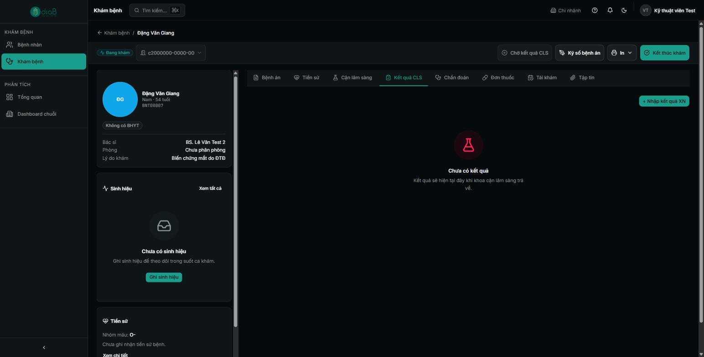
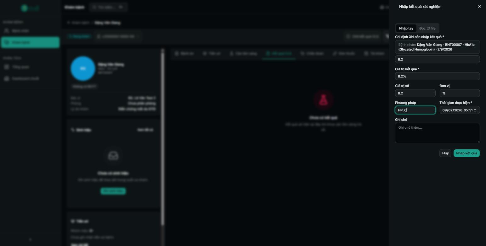
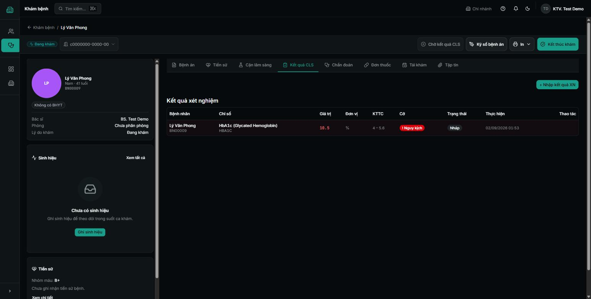

Hướng dẫn kỹ thuật viên nhập kết quả CLS do bác sĩ chỉ định, gắn cờ bình thường/bất thường, để bác sĩ xem và duyệt.
Tổng quan luồng CLS
Khi bác sĩ chỉ định xét nghiệm hoặc chẩn đoán hình ảnh, kỹ thuật viên thực hiện và nhập kết quả vào hệ thống. Kết quả có thể nhập tay hoặc đọc từ file. Hệ thống tự gắn cờ (Bình thường / Cao / Thấp) theo khoảng tham chiếu. Kết quả mới ở trạng thái Nháp cho tới khi được xác thực (bác sĩ/người có quyền duyệt).
Sơ đồ luồng rút gọn
Mở màn hình CLS.
Bấm + Nhập kết quả.
Chọn chỉ định XN của bệnh nhân, nhập giá trị, đơn vị, phương pháp, thời gian.
Lưu — kết quả ở trạng thái Nháp, gắn cờ tự động.
Bác sĩ xem, xác thực → Đã xác thực.
Vai trò tham gia
Vai trò
Tham gia bước nào
Quyền cần có
Kỹ thuật viên
Nhập kết quả xét nghiệm, CĐHA
Vai trò Kỹ thuật viên (25 quyền)
Bác sĩ
Xem & xác thực (duyệt) kết quả
Vai trò Bác sĩ
Điều kiện tiên quyết
Đã đăng nhập bằng tài khoản Kỹ thuật viên.
Có chỉ định CLS do bác sĩ tạo cho bệnh nhân.
1Mở màn hình CLS
Vào menu CLS (Cận lâm sàng). Màn hình có các thẻ: Kết quả xét nghiệm, Kết quả CĐHA, Đối tác lab, Tích hợp lab. Bảng kết quả hiển thị theo cột Bệnh nhân, Chỉ số, Giá trị, Đơn vị, KTTC, Cờ, kèm ô tìm kiếm và bộ lọc trạng thái/cờ.

📷 images/ky-thuat-vien/01-man-hinh-cls.png — Màn hình CLS: thẻ Kết quả xét nghiệm/CĐHA/Đối tác lab/Tích hợp lab, nút “+ Nhập kết quả”, bảng kết quả với cột Cờ (Bình thường/Cao).
Màn hình Cận lâm sàng
① Thẻ danh mục kết quả (Xét nghiệm / CĐHA / Đối tác lab / Tích hợp lab).
② Bộ lọc trạng thái và cờ; ô Tìm chỉ số.
③ Nút + Nhập kết quả ở góc phải.
2Nhập kết quả
Bấm + Nhập kết quả. Bảng nhập mở ra bên phải với 2 chế độ: Nhập tay hoặc Đọc từ file. Với nhập tay, điền các trường:
Chỉ định XN cần nhập kết quả (bắt buộc) — tìm theo tên/mã bệnh nhân hoặc tên xét nghiệm.
Giá trị kết quả (bắt buộc) — VD: 6.2 hoặc “Âm tính”.
Giá trị số và Đơn vị — VD: 6.2 / mmol/L.
Phương pháp — VD: Enzymatic.
Thời gian thực hiện (bắt buộc) và Ghi chú.

📷 images/ky-thuat-vien/02-nhap-ket-qua.png — Bảng “Nhập kết quả XN” với 2 chế độ Nhập tay/Đọc từ file và các trường Chỉ định XN, Giá trị kết quả, Giá trị số, Đơn vị, Phương pháp, Thời gian thực hiện, Ghi chú.
Bảng nhập kết quả xét nghiệm
① Chế độ Nhập tay / Đọc từ file.
② Ô Chỉ định XN cần nhập kết quả — chọn đúng chỉ định của bệnh nhân.
③ Nhập Giá trị kết quả, Giá trị số, Đơn vị.
④ Chọn Thời gian thực hiện rồi lưu.
💡 Đọc từ file: Nếu máy xét nghiệm xuất file kết quả, dùng chế độ Đọc từ file để nhập nhanh thay vì gõ tay.
3Trạng thái & cờ kết quả
Sau khi lưu, kết quả xuất hiện trong bảng với cờ tự động: Bình thường (xanh) hoặc Cao / Thấp (đỏ) theo khoảng tham chiếu. Trạng thái kết quả gồm: Nháp (vừa nhập, chưa duyệt), Đã xác thực (đã duyệt), Đã sửa.

📷 images/ky-thuat-vien/03-loc-trang-thai.png — Bộ lọc trạng thái mở ra: Nháp, Đã xác thực, Đã sửa.
Lọc theo trạng thái
①Nháp — kết quả vừa nhập, đang chờ bác sĩ duyệt.
②Đã xác thực / Đã sửa — kết quả đã được duyệt/chỉnh.
⚠️ Lưu ý: Kiểm tra kỹ chỉ định, đơn vị và giá trị trước khi lưu. Kết quả sai có thể ảnh hưởng chẩn đoán. Nếu phát hiện sai sau khi lưu, chỉnh lại (trạng thái chuyển “Đã sửa”) và báo bác sĩ duyệt lại.
Câu hỏi thường gặp
Không tìm thấy chỉ định XN của bệnh nhân?
Đảm bảo bác sĩ đã tạo chỉ định CLS cho lượt khám. Tìm theo mã bệnh nhân hoặc tên xét nghiệm trong ô “Chỉ định XN”.
Kết quả gắn cờ sai (bình thường thành cao)?
Cờ được tính theo khoảng tham chiếu của chỉ số. Nếu khoảng tham chiếu chưa đúng, báo quản trị viên cập nhật danh mục chỉ số/khoảng tham chiếu.